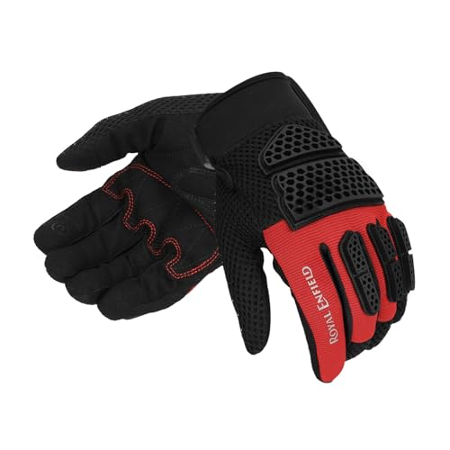

Bajaj Pulsar NS200 Accessories – Complete Buying Guide
The Bajaj Pulsar NS200 is one of India's most popular naked streetfighters. With its aggressive styling, perimeter frame, and a punchy 199.5cc triple-spark engine putting out around 24.5 PS, it strikes a balance between daily commuting and weekend spirited riding. But like any motorcycle, the right accessories can transform it from a capable machine into a truly personal and practical ride.
This guide covers every accessory category relevant to the NS200 — why each matters, who needs it, what features to look for, and how to install it without voiding your warranty.
Quick Specs – Bajaj Pulsar NS200
NS200 At a Glance
Why Accessorize a Pulsar NS200?
The NS200 rolls off the showroom floor with a strong foundation, but it has clear gaps:
- No wind protection — The naked design means full windblast at highway speeds
- Limited storage — No built-in compartments for daily essentials
- Basic protection — A single drop can damage expensive bodywork and engine components
- Ergonomics — The aggressive riding position works for sporty riding but can fatigue on long commutes
- Visibility — Stock lighting is adequate but not exceptional for night riding
The right accessories address these gaps without compromising the bike's character.
Each section includes product recommendations with dynamic pricing, installation difficulty ratings, and compatibility notes specific to the NS200. We recommend starting with essentials and adding accessories based on your riding style.
Quick Navigation
Helmets
Full-face, modular, and budget options for every riding style
Crash Guards
Engine and frame protection against drops and tip-overs
Tank Bags
Storage solutions for daily commutes and touring
Phone Mounts
Navigation holders with vibration dampening
Chain Maintenance
Lubes, cleaners, and tools for drivetrain care
Engine Oil
Best oils and maintenance schedules for the 199.5cc engine
Helmets
Why It Matters
A helmet is the single most important piece of gear you own. The NS200's 200cc engine means you'll regularly touch 80-100 km/h on highways, making a quality helmet non-negotiable. Indian law requires ISI certification, but you should aim higher.
Who Should Buy What
- Daily commuters — A lightweight full-face helmet with good ventilation (under 1.4 kg) for comfort in stop-and-go traffic
- Weekend tourers — A full-face helmet with a wider visor and better aerodynamics for sustained highway speeds
- Budget riders — ISI-certified helmets from reputable Indian brands like Studds or Vega offer solid protection without breaking the bank
Features to Look For
| Feature | Why It Matters |
|---|---|
| ISI + DOT certification | Dual certification means tested to higher standards |
| Pinlock-ready visor | Anti-fog insert for monsoon and winter morning rides |
| Multi-density EPS liner | Absorbs impacts at different speeds |
| Removable cheek pads | Allows washing and replacement as pads compress over time |
| Ventilation channels | Critical for Indian summers; look for at least 2 intake and 2 exhaust vents |
Top Helmet Picks
Editor's Pick — Best overall helmet for NS200 riders:

Studds Ninja DG
Best for: Budget riders wanting a reliable full-face helmet
The Studds Ninja DG is a solid budget full-face helmet with ISI certification, suitable for all motorcycles.

Vega Crux Dual Visor Flip Up Helmet
Best for: Commuters wanting flip-up convenience at a budget price
The Vega Crux offers flip-up convenience with dual visor protection at an entry-level price point.

4U Supreme Volt Full Face Helmet
Best for: Budget-conscious buyers needing a basic full-face helmet
The 4U Supreme Volt is one of the most affordable full-face helmets with ABS shell and ISI certification.
Installation Tips
- Always try before buying — the helmet should fit snugly with no pressure points
- Check visor seal when closed; gaps let in wind noise and rain
- Replace any helmet after a significant impact, even if no damage is visible
Compatibility Considerations
The NS200's riding position means you're more upright than a fully-faired sportbike. Choose a helmet with a slightly wider visor field of view — the aggressive riding stance means you'll be scanning traffic more actively than a tucked-in sportbike rider.
Never buy a helmet based on looks alone. A ₹2,000 ISI-certified helmet protects better than a ₹10,000 non-certified "designer" helmet. Check the ISI mark and ISI number on the back of the helmet — it should be clearly embossed, not just printed.
Crash Guards and Engine Protectors
Why It Matters
The NS200's exposed engine and bodywork are vulnerable in even a minor tip-over. Crash guards and engine protectors are your first line of defense against expensive repairs. A single low-speed drop can crack the fairing, bend a lever, or scratch the engine casing — repairs that cost significantly more than a quality crash guard.
Who Should Buy What
- New riders — Drop protection is essential while you're building confidence and balance
- City riders — Tight parking, congested roads, and frequent stops increase the chance of tip-overs
- Touring riders — Unfamiliar terrain and fatigue raise the risk of falls
- All riders — Even experienced riders face unpredictable situations on Indian roads
Features to Look For
- Material: Tubular steel (DOM or seamless) offers the best strength-to-weight ratio. Avoid cheap cast aluminium guards — they crack on impact rather than absorbing energy
- Coverage: Look for guards that protect the engine casing, cylinder head, and radiator area. The NS200's exposed engine means you need comprehensive coverage
- Mounting points: Guards should bolt to the frame, not the engine. Frame-mounted guards distribute impact forces better
- Finish: Powder-coated or powder-painted guards resist rust better than raw or chrome-plated options
Installation Difficulty
Moderate — Requires removing fairing panels
Installation Tips
- Most bolt-on guards require no drilling or welding — they use existing frame mounting points
- Remove the fairing panels first to access mounting bolts; don't force them
- Tighten bolts to manufacturer torque specs; over-tightening strips threads
- Re-torque all bolts after 500 km — vibrations can loosen new mounts
Compatibility Considerations
The NS200's perimeter frame provides strong mounting points, but the engine sits relatively low. Choose guards that extend downward enough to protect the crankcase without reducing ground clearance. The NS200 already has limited clearance for its category; don't sacrifice it further with poorly designed guards.
OEM vs Aftermarket
Bajaj OEM Crash Guard
- Factory-fitted mounting points
- Tested for fitment compatibility
- Warranty-safe installation
- Basic tubular steel design
Aftermarket Options
- Wider range of designs and coverage
- Heavy-duty options available
- Often better value for money
- Choose reputable brands (Racing Boy, Zana, MS)
Tank Bags
Why It Matters
The NS200 has no built-in storage. A tank bag keeps essentials — phone, wallet, keys, documents, a water bottle — within arm's reach without requiring a backpack. On long rides, this small convenience makes a significant difference in comfort and focus.
Who Should Buy What
- Daily commuters — A small tank bag (5-10 liters) for phone, wallet, and documents
- Touring riders — A larger bag (15-20 liters) or a bag with expansion zippers for multi-day trips
- Photographers and content creators — Quick-access pockets for cameras and accessories
Features to Look For
| Feature | Why It Matters |
|---|---|
| Magnetic or strap-on mounting | Magnetic is faster to remove; strap-on is more secure at high speed |
| Waterproof rain cover | Essential for monsoon riding; many bags include one |
| Clear map/phone pocket | Navigation without stopping; check phone without removing from bag |
| Expansion zipper | Doubles capacity when needed; compresses flat when not in use |
| Reflective strips | Added visibility for night riding |
Installation Difficulty
Easy — No tools required
Installation Tips
- Magnetic bags: Ensure the tank surface is clean and dry before attaching. Magnetic bags work best on metal tanks — the NS200's tank is metal, so this is fine
- Strap-on bags: Route straps under the tank and through the frame; avoid routing near hot engine components or moving parts
- Weight distribution: Don't overload the bag; heavy items should sit low and centered to avoid affecting steering
Compatibility Considerations
The NS200's tank has a sculpted design with knee cutouts. Magnetic bags may not sit flush on all areas — test fitment before buying. The tank pad area is usually the flattest section and works best for magnetic attachment.
Phone Mounts
Why It Matters
Navigation is a necessity on Indian roads, and mounting your phone on the handlebar is safer and more convenient than pulling over to check directions. A good phone mount also doubles as a dashcam setup for recording rides.
Who Should Buy What
- All riders — Even familiar routes benefit from real-time traffic updates
- Touring riders — Essential for navigation on unfamiliar roads
- Daily commuters — Quick-glance navigation reduces stop-and-go delays
Features to Look For
- Vibration dampening: The NS200's single-cylinder engine produces noticeable vibrations, especially between 4000-6000 RPM. A mount without vibration dampening can damage your phone's camera stabilizer over time
- 360-degree rotation: Allows portrait and landscape orientation
- Quick-release mechanism: One-handed operation for mounting and removing
- Secure locking: Should not let go of your phone even on rough roads
Motorcycle vibrations can permanently damage optical image stabilization (OIS) in phone cameras. This is especially problematic for iPhones and Samsung flagships. Always choose a phone mount with vibration dampening — it's a small investment to protect a expensive phone.
Top Phone Mount Picks

BOBO BM17 Pro Phone Mount
Best for: Any motorcycle with handlebar mounting space
The BOBO BM17 Pro fits virtually any motorcycle handlebar, making it a universal phone mount solution.
Installation Difficulty
Easy — Bolt-on, no modifications
Installation Tips
- Mount on the handlebar, not the mirror stem — handlebar mounts are more stable
- Avoid mounting over the instrument cluster; it blocks your view of speed and RPM
- Test with your phone case; some cases are too thick for clamp-style mounts
- Tighten the mounting bolt firmly but don't overtighten — you're clamping to a hollow tube
Compatibility Considerations
The NS200's handlebar has limited free space due to the clip-on-style risers. Measure the available clamp area before purchasing. Most universal mounts fit, but some oversized mounts may conflict with the instrument cluster or ignition barrel.
Chain Lubricants and Maintenance Kits
Why It Matters
The NS200 uses an exposed chain drive — the most common drivetrain on Indian motorcycles. Chains need regular cleaning, lubrication, and tension adjustment. Neglecting chain maintenance leads to poor fuel efficiency, accelerated sprocket wear, and potential chain failure at speed.
Who Should Buy What
- All riders — Chain maintenance is universal and unavoidable
- Frequent riders — If you ride daily, maintenance intervals shorten significantly
- Monsoon riders — Wet conditions wash away lubricant and accelerate rust
Features to Look For
| Product Type | What to Look For |
|---|---|
| Chain cleaner | Safe for O-ring and X-ring chains; non-corrosive; fast-dissolving |
| Chain lube | Stays on at highway speeds; resists fling-off; works in wet and dry conditions |
| Chain brush | Three-sided bristle design cleans all surfaces simultaneously |
| Chain tension gauge | Eliminates guesswork; ensures correct slack (20-30mm for the NS200) |
Top Chain Maintenance Picks

Bajaj Tempo Chain Lube
Best for: All chain-driven motorcycles
A budget-friendly chain lube that works well on all chain-driven motorcycles.
Installation Difficulty
Easy — Basic tools, 15 minutes
Installation Tips
- Clean and lube the chain on the center stand with the rear wheel off the ground
- Apply lube to the inside of the chain (the side that contacts the sprocket)
- Let the lube penetrate for 10-15 minutes before riding
- Wipe excess lube to prevent dust attraction
Maintenance Schedule
| Condition | Clean Interval | Lube Interval | Tension Check |
|---|---|---|---|
| City commuting | Every 500 km | Every 500 km | Every 1000 km |
| Highway touring | Every 300 km | Every 300 km | Every 500 km |
| Dusty conditions | Every 200 km | Every 200 km | Every 500 km |
| Monsoon riding | Every 200 km | Every 200 km | Every 300 km |
Compatibility Considerations
The NS200 uses a 520-pitch chain — standard for 200cc-class motorcycles. Most universal chain lubes and cleaners work fine. Avoid automotive grease or general-purpose lubricants; motorcycle-specific products are formulated for the temperatures and speeds a motorcycle chain experiences.
Engine Oil and Fluids
Why It Matters
The NS200's 199.5cc engine runs hot under aggressive riding, especially in Indian traffic conditions where cooling airflow drops during idling and low-speed crawling. The right engine oil maintains viscosity at high temperatures, protects internal components, and keeps the engine running smoothly between service intervals.
Who Should Buy What
- DIY mechanics — If you change your own oil, buying quality products saves money over dealer services
- Extended service interval riders — Synthetic oils allow longer intervals without compromising protection
- Performance-oriented riders — Upgraded oils can marginally improve engine response and reduce mechanical noise
Features to Look For
| Specification | NS200 Requirement |
|---|---|
| Grade | 10W-50 (recommended for Indian conditions) |
| Type | Fully synthetic or semi-synthetic |
| API rating | SN or higher |
| JASO rating | MA2 (for wet clutch compatibility) |
Top Engine Oil Picks
Best Value — Reliable protection at a great price:

Motul 7100 10W-50 Engine Oil
Best for: Performance and mid-capacity motorcycles needing 10W-50 grade
The Motul 7100 is a premium fully synthetic engine oil ideal for mid to high-performance motorcycles.
For the NS200, change fully synthetic oil every 3,000-5,000 km in Indian conditions. If you ride primarily in stop-and-go city traffic, lean toward the shorter interval. Highway riding extends the interval. Always change the drain plug washer every other oil change to prevent leaks.
Installation Difficulty
Moderate — Requires basic mechanical knowledge
Installation Tips
- Always warm the engine for 3-5 minutes before draining oil; warm oil flows more completely
- Replace the drain plug washer every other oil change
- Use a torque wrench on the drain plug — over-tightening strips the threads in the aluminum sump
- Check oil level on the center stand with the engine off, 5 minutes after filling
Oil Change Schedule
| Oil Type | Change Interval | Capacity |
|---|---|---|
| Mineral | Every 2,000-3,000 km | 1.2 liters (with filter) |
| Semi-Synthetic | Every 3,000-5,000 km | 1.2 liters (with filter) |
| Fully Synthetic | Every 5,000-7,000 km | 1.2 liters (with filter) |
Compatibility Considerations
The NS200's engine is shared across the Pulsar NS/AS/RS 200 range. Oil specifications are identical. Stick to 10W-50 for Indian climate conditions; thinner oils may not provide adequate protection during summer highway rides where oil temperatures can exceed 120°C.
Tire Maintenance
Why It Matters
The NS200's stock tires are decent but not exceptional. Tire pressure, tread depth, and rubber condition directly affect grip, handling, braking, and fuel efficiency. In Indian conditions — where road surfaces vary from smooth tarmac to broken gravel within the same kilometer — tire maintenance is safety-critical.
Who Should Buy What
- All riders — A quality tire pressure gauge is the most underrated motorcycle tool
- Performance riders — Consider upgrading to softer-compound tires for better grip
- Touring riders — Harder-compound tires last longer on highways but sacrifice some wet grip
Features to Look For
| Item | What to Look For |
|---|---|
| Tire pressure gauge | Digital preferred for accuracy; check calibration periodically |
| Tire inflator | Portable 12V or rechargeable for roadside emergencies |
| Puncture repair kit | Tubeless-compatible plugs; includes CO2 cartridges for quick inflation |
| Tire pressure sticker | Stick near the swingarm as a reference; NS200 recommends 28 PSI front, 32 PSI rear |
Top Tire Maintenance Picks

TUSA Storm X Cordless Tyre Inflator
Best for: Emergency roadside inflation with both cordless and car adapter options
The TUSA Storm X offers dual power options (cordless + car adapter) with reliable auto cut-off for hassle-free inflation

Bergmann Typhoon Digital Tyre Inflator
Best for: Garage use and heavy-duty inflation needs
The Bergmann Typhoon is a robust metal-body inflator with auto cut-off, ideal for regular home garage use.
Installation Tips
- Check tire pressure when tires are cold (before riding); heat increases pressure by 2-4 PSI
- Inspect tires visually before every ride; look for cuts, embedded objects, or uneven wear
- Replace tires when tread depth falls below 1.5 mm — the legal minimum is 1 mm, but safety margin matters
Tire Pressure Quick Reference
| Riding Condition | Front (PSI) | Rear (PSI) |
|---|---|---|
| Solo rider | 28 | 32 |
| With pillion | 28 | 35 |
| Highway touring (solo) | 30 | 33 |
| Highway touring (with pillion) | 30 | 35 |
Compatibility Considerations
The NS200 runs tubeless tires (100/80-17 front, 130/70-17 rear). Any tubeless-compatible repair kit or inflator works. When upgrading tires, stick to the stock sizes unless you've done comprehensive research on the impact on speedometer accuracy, ABS calibration (if equipped), and handling geometry.
Lighting Upgrades
Why It Matters
The NS200's stock halogen headlight is adequate for city riding but falls short on unlit highways and during monsoon conditions where visibility drops significantly. LED upgrades improve nighttime visibility without draining the battery.
Who Should Buy What
- Night riders — If you frequently ride after dark, improved lighting is a safety investment
- Highway riders — Stock halogen throw is limited; LED upgrades extend visibility distance
- Monsoon riders — Better lighting cuts through rain and fog more effectively
Features to Look For
| Upgrade | What to Look For |
|---|---|
| LED headlight bulb | Plug-and-play H4 fitment; 6000K color temperature for white light |
| Auxiliary fog lights | IP67 waterproof; adjustable beam angle; separate wiring harness |
| LED indicators | Faster on/off response improves visibility to other drivers |
| Tail light upgrade | Brighter LED for better rear visibility |
Installation Difficulty
Moderate — Electrical wiring knowledge needed
Installation Tips
- LED headlight: Remove the headlight assembly (usually 2-4 screws), disconnect the H4 plug, swap the bulb, and reconnect. Most LED bulbs are plug-and-play
- Auxiliary lights: Mount on the crash guard or engine guard using clamps. Wire through a relay connected to the battery, with a separate switch on the handlebar
- LED indicators: Direct replacement for stock bulbs; no relay needed if the flash rate stays consistent. If they blink too fast (hyperflash), add a resistor or use an LED-compatible flasher relay
Always wire auxiliary lights through a relay connected directly to the battery. Direct wiring to the stock harness can overload circuits and blow fuses. Use 16-gauge wire minimum for auxiliary lights and 12-gauge for the relay power feed.
Compatibility Considerations
The NS200's electrical system is 12V with a standard H4 headlight socket. Most aftermarket LED bulbs fit directly. However, cheap LED bulbs may cause electromagnetic interference with the instrument cluster — choose reputable brands. Auxiliary lights should be wired through a relay to avoid overloading the stock wiring harness.
Riding Gear
Why It Matters
Accessories aren't limited to the motorcycle itself. The NS200's performance potential means you should invest in protective gear that matches the bike's capabilities.
Who Should Buy What
- All riders — At minimum, a quality helmet and riding gloves
- Commuters — Riding jacket with armor for daily protection against sun, wind, and falls
- Touring riders — Full riding kit: jacket, pants, boots, and gloves for extended highway exposure
Features to Look For
| Gear | Key Features |
|---|---|
| Riding jacket | CE-rated armor at shoulders and elbows; mesh panels for ventilation; reflective elements |
| Riding gloves | Knuckle protection; touchscreen-compatible fingertips; breathable material |
| Riding pants | CE-rated knee and hip armor; abrasion-resistant fabric (Cordura or equivalent) |
| Riding boots | Ankle protection; oil-resistant sole; waterproof for monsoon |
Top Riding Gear Picks

Axor Viper Riding Gloves
Best for: Touring and sport riders wanting premium hand protection
The Axor Viper is a premium touring glove with touchscreen compatibility and visor wiper fingertips.

Royal Enfield Street Ace 2.0 Gloves
Best for: Royal Enfield owners wanting matching brand gear
The Street Ace 2.0 offers solid protection with air mesh ventilation, ideal for Royal Enfield motorcycles.
Installation Tips
- Riding gear requires no installation — but proper fit is essential
- Jackets should feel snug when standing; the armor should sit on the joint, not shift around
- Gloves should allow full throttle and brake lever operation without pinching
Compatibility Considerations
The NS200's aggressive riding position means you'll be leaning forward slightly. Choose jackets with pre-curved arms and pants with stretch panels to accommodate this posture without restricting movement.
Tool Kits and Emergency Supplies
Why It Matters
Breakdowns happen. The NS200 is reliable, but flat tires, loose bolts, and minor electrical issues are part of motorcycle ownership. Being prepared turns a potential disaster into a minor inconvenience.
Who Should Buy What
- All riders — A basic tool kit and first-aid kit should be standard equipment
- Touring riders — Extended kit with tire repair, spare fuses, and emergency contact info
- Long-distance commuters — Toolkit for roadside adjustments
Features to Look For
| Item | Why It Matters |
|---|---|
| Socket set (8mm-14mm) | Covers most bolts on the NS200 |
| Allen key set | Bodywork and accessory bolts |
| Tire pressure gauge | Essential for diagnosing tire issues |
| Spare fuses | Stock fuse box uses blade-type fuses |
| Duct tape and zip ties | Temporary fixes for loose panels and wiring |
| First-aid kit | Bandages, antiseptic, pain relievers |
| Reflective triangle | Warning other drivers in case of roadside stops |
Installation Tips
- Store the toolkit under the seat or in a tail bag — not in a tank bag where it adds weight forward
- Check tool kit contents periodically; replace worn or rusted tools
- Keep emergency supplies in a waterproof bag
Compatibility Considerations
The NS200's under-seat storage is limited. Prioritize compact, multi-purpose tools over comprehensive sets. A quality multi-tool often replaces 5-6 individual tools.
Related Motorcycle Accessories Guides
Chain Maintenance Guide
Complete step-by-step chain cleaning and lubrication guide
Tyre Pressure Guide
Optimal tyre pressure settings for every riding condition
Engine Oil Guide
Choosing the right oil and when to change it
Summary
| Accessory Category | Priority | Installation Difficulty | Why |
|---|---|---|---|
| Helmet | Essential | Easy | Legal requirement and safety foundation |
| Crash Guards | High | Moderate | Prevents expensive damage from drops |
| Phone Mount | High | Easy | Navigation and communication |
| Chain Maintenance Kit | Essential | Easy | Prevents drivetrain failure |
| Engine Oil | Essential | Moderate | Engine protection and performance |
| Tank Bag | Medium | Easy | Storage for daily essentials |
| Tire Maintenance | Essential | Easy | Safety and handling |
| Lighting Upgrades | Medium | Moderate | Visibility and safety |
| Riding Gear | High | Easy | Personal protection |
| Tool Kit | Medium | Easy | Emergency preparedness |
The Pulsar NS200 is a versatile machine that rewards thoughtful accessorizing. Start with the essentials — helmet, chain maintenance, and basic protection — then add accessories that match your riding style. Every accessory should serve a purpose; avoid cluttering your bike with gear you'll never use.
Ride safe, maintain regularly, and let your accessories work for you — not against you.